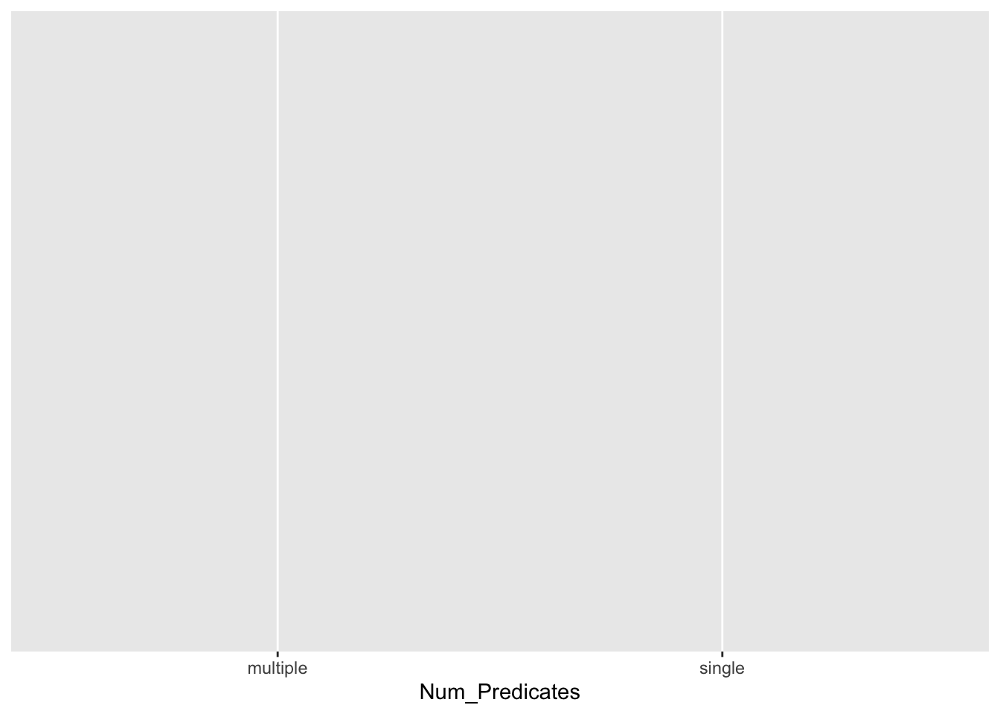
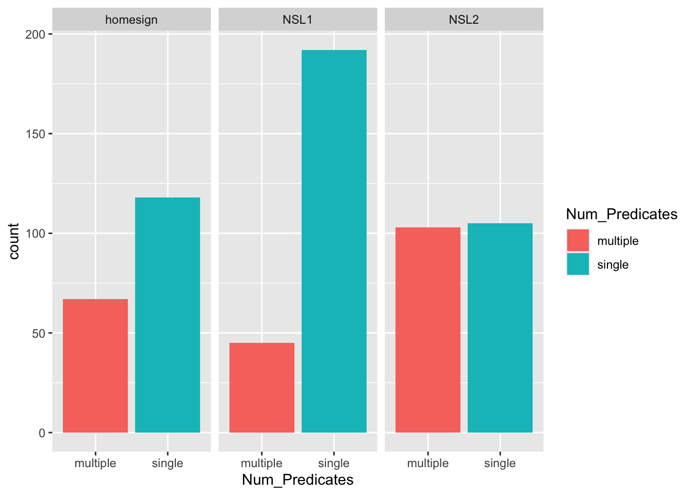

Session 2
Recap from Session 1
Plotting data in R
This week you will learn how to create simple plots of the Brentari 2024 data you worked with last week. Then, you will practice what you learnt with a new data!
The tidyverse package ggplot2 provides users with a consistent set of functions to create captivating graphics.
Since ggplot2 is part of the tidyverse, when you attach the tidyverse with library(tidyverse), the ggplot2 package is also attached, so you don’t have to attach it directly.
Go to the script you created last time and re-run all the code to attach the tidyverse packages and read the data in R.
Let’s create a simple plot with the number of observation per number of predicates (single vs multiple) in the three signers groups. We will build the plot one layer at a time so that you can understand what each line does (but note that normally you would just create the plot in one go). Here’s the final plot: this is known as a “bar chart”.
First, we need data and some axes.
ggplot(verb_org, aes(x = Num_Predicates))
To create a plot you need:
- The
ggplot()function. - The data to use as the first argument to the
ggplotfunction. - The “aesthetics” to include in the plot, with the
aes()function.
Here, we want an x-axis with multiple and single predicate numbers. Hence x = Num_predicates (that’s the name of the column in the data and x = says it has to be the x-axis).
Write the code in your script and run it. The plot will appear in the “Plots” tab of the bottom-right panel of RStudio.
Now, let’s add bars with the counts (we will split by Group later).
ggplot(verb_org, aes(x = Num_Predicates)) +
geom_bar()It’s easy! You just add + geom_bar() (for bar geometry). Don’t forget the + at the end of the first line! Geometries are visual elements of the plots that represent data, here the counts of observations of multiple and single predicates. You don’t have to make the count yourself, geom_bar() counts things for you and generates the bars. The y-axis is the counts.
So, based on the plot there are a total of a bit more than 200 multiple predicates and a bit more than 400 single predicates. This is interesting by itself: single predicates are more common than multiple predicates, overall.
Now let’s split the data depending on the group of signers (home-signers, first generation, second generation). To do this, we can use “facetting”, which creates separate panels in the plot.
ggplot(verb_org, aes(x = Num_Predicates)) +
geom_bar() +
facet_grid(cols = vars(Group))The facet_grid() function allows you to facet the plot into panels. It takes either a cols argument or a rows argument. Here we wanted the panels to be arranged in columns, rather than rows, so we used the cols argument. The argument takes a column from the data to split panels by: here, we specified Group. Note that you need to enclose the column in the vars() function (don’t worry as to why).
Feel free to try and use rows instead of cols and see what the difference is.
We are almost there! While colour is not really necessary to distinguish multiple vs single predicates because they are already shown on the x-axis, colour can facilitate comparison (but don’t overdo it!). Changing colours in plots might not seem straightforward to beginners, so here you will just learn how to change the colour as per the plot above, but to really understand what the code is doing, you will have to dive in Chapter 1 of R for Data Science.
ggplot(verb_org, aes(x = Num_Predicates, fill = Num_Predicates)) +
geom_bar() +
facet_grid(cols = vars(Group))
Colours are considered “asthetics” elements because the map data to aesthetic aspects of the plot. Here, colour is mapped into number of predicates. ggplot has default colours that are selected for you, but you can customise them. As mentioned above, customisation is not that straightforward to beginners so here I will just show you the code without going into the details. To understand in more details, you will have to learn more about ggplot2.
ggplot(verb_org, aes(Num_Predicates, fill = Num_Predicates)) +
geom_bar() +
facet_grid(cols = vars(Group)) +
scale_fill_brewer(type = "qual")scale_fill_brewer(type = "qual") selects a qualitative scale from ColorBrewer2 to fill the bars. (You can check the documentation of specific functions by running the function name preceded by ? in the console: for example ?scale_fill_brewer).
We can also customise the labels of the axes, using the labs() function.
ggplot(verb_org, aes(Num_Predicates, fill = Num_Predicates)) +
geom_bar() +
facet_grid(cols = vars(Group)) +
scale_fill_brewer(type = "qual") +
labs(x = "Predicate type", y = "Count")To change the label of the x-axis, you use the x argument followed by = and a string with the text for the label: x = "Predicate type". To change the y-axis label, you do the same but with the y argument.
Now, the last step is to remove the legend. We don’t really need the legend because the colour doesn’t add to what we already know from the axes.
ggplot(verb_org, aes(Num_Predicates, fill = Num_Predicates)) +
geom_bar() +
facet_grid(cols = vars(Group)) +
scale_fill_brewer(type = "qual") +
theme(legend.position = "none")The theme() function allows you to change some aspects of the plot, among which the position of the legend. When the position is set to "none", then the legend is not shown.
You might want to export the plot to include it in your dissertation or paper. You can click on the Export button in the Plots tab and select Image or PDF. A window opens with some settings for you to choose (ask me if you are unsure about what they do).
If you click “Save” the file is saved on the server: go to the Files tab and you should see your plot listed among the files. If you click on the plot file, the plot will be opened in the Browser and you can download it to your computer.
Practice
Now you can practice reading data in R, counting observations and plotting using a different data set: coretta2022/glot_status.rds.
You might have noticed that the file with the data glot_status.rds is not a .csv file, but an .rds file. This is a special file format used with R.
To read an .rds file you use the readRDS() function, like so.
glot_status <- readRDS("data/coretta2022/glot_status.rds")Don’t worry about what .rds files actually are, just that they contain data and that you can read them with readRDS()!
You should view the data now that it’s imported in R.
Here you can find a description of the columns in the glot_status data: Glottolog 4.6 data: Agglomerated Endangerment Status. The data is a list of languages of the world with their Agglomerated Endangerment Status (an index of endangerment). This information is contained in the status column.
# A tibble: 8,345 × 2
Name status
<chr> <fct>
1 Kol (Papua New Guinea) shifting
2 Tanahmerah shifting
3 Touo shifting
4 Berta shifting
5 Siuslaw extinct
6 Jalaa extinct
7 Elseng shifting
8 Taiap moribund
9 Pyu shifting
10 Mato Grosso Arára extinct
# ℹ 8,335 more rowsTry to count the number of languages. The following instructions give you examples of a few things that you can count in the data but feel free to explore the data further (ask me any questions about the columns if it’s not clear what they are).
Now that you checked some counts, you can try to plot the data! If you need some inspiration and a challenge, here is a plot you could try to reconstruct yourself using what you learnt above.
The following is a “stacked” bar chart. It’s stacked because the bars of different colour (i.e. different status) are stacked on top of each other. You can create a stacked bar chart using the fill argument. Can you figure out how? There are a couple hints below but feel free to ask for more directions!
Conclusion
Fantastic job! You should pat yourself on the shoulders. In just two short sessions you have learnt quite a lot! Of course, to be proficient in using R for data analysis you will have to put in a lot more work (years of practice, really!).
If you feel that you do want to learn more, then I recommend the R for Data Science book. It’s great for beginners and it covers all the basics of reading, summarising and plotting data in R.
It does not cover statistics per se. If you would like to learn more about statistics too, the best place is look at the materials of the Quantitative Methods course in LEL. Of course, feel free to reach out to Stefano (s.coretta@ed.ac.uk) for further suggestions.